사회조사분석사-2급 (2005-08-07 기출문제)
1과목: 조사방법론 I
1. 면접조사와 비교하여 전화조사의 장점이 아닌 것은 ?
- 면접자의 영향을 통제할 수 있다.
- 표본오차의 통제에 유용하다.
- 조사에 소요되는 시간이 짧다.
- 비용이 적게 든다.
(정답률: 알수없음)

2. 사회과학에 있어 해석적 관점에 관한 설명으로 옳지 않은 것은 ?
- 사회과학 연구의 주요 목적을 인간행태의 인과관계에 관한 논증이 아니라 인간행위의 의미를 이해하고 해석하는 것으로 본다.
- 인간의 행위는 인간의 신념, 소망, 목적과 분리할 수 없다고 본다.
- 인간의 행위와 연결된 신념, 소망, 목적을 알게되면 행위의 의미 또는 의의를 이해할 수 있다고 본다.
- 인간행위에 대한 해석의 객관적 주관성은 연구자들이 주관을 달리하기 때문에 다른 해석 또는 설명에 도달할 수 있어야 함을 의미한다.
(정답률: 55%)
3. 다음 중 질적 연구방법과 가장 거리가 먼 것은 ?
- 심층면접
- 참여관찰
- 전화설문조사
- 불개입, 무반응법
(정답률: 77%)
4. 다음 중 폐쇄형 응답식 설문조사에서 응답을 얻기 위해 사용하는 방식이 아닌 것은 ?
- 척도형
- 선택형
- 서열형
- 논술형
(정답률: 알수없음)
5. 자료의 코딩이 끝난 후, 조사자료의 품질관리의 한 방편으로 행해지는 작업으로서 가장 중요시되는 것은?
- 자료의 사례별 sorting
- 자료의 재입력
- 자료의 cleaning
- 자료의 분야별 sorting
(정답률: 10%)
6. 우편조사를 위한 질문지에 수록할 조사의 취지문에 포함시키지 않아도 되는 것은?
- 연구자 ( 또는 조사자 )의 연락처와 전화번호
- 실시기관
- 응답에 대한비밀유지
- 표본의 규모와 응답자의 범위
(정답률: 알수없음)
7. 비반응적 혹은 비관여적 자료조사의 예로서 가장 적절한 것은?
- 청소년들의 게임선호경향을 파악하기 위해 6 - 7 명의 청소년을 모아놓고 함께 토론을 벌이고 의견을 수집한다.
- 충남 oo 군에 있는 환경마을을 찾아가 그곳의 주민과 직접 대화해서 수집한다.
- 특정 신문사가 다른 신문사에 비해 환경문제에 더 관심을 가지고 있는가를 파악하기 위해 과거 10 년간 신문기사들을 수집한다.
- 노숙사의 생활양식을 조사하는 조사자가 직접적 관찰기법을 동원하여 자료를 수집한다.
(정답률: 알수없음)
8. 질문지를 설계할 때 폐쇄형 응답식으로 할 때의 장점은?
- 심층적인 정보를 얻기가 용이하다.
- 수집된 자료의 수량적 분석이 용이하다.
- 등답자로부터 포괄적인 응답을 얻을 수 있다.
- 연구를 시작할 때 기초정보 수집에 적절하다.
(정답률: 알수없음)
9. 일반적으로 인과관계의 조건과 관련이 없는 것은?
- 시간적 선행성
- 공변관계
- 비허위적 관계
- 연속변수
(정답률: 알수없음)
10. 질문지 설계시 고려할 사항이 아닌 것은?
- 지시문의 내용
- 자료 수집방법
- 질문의 유형
- 표본추출방법
(정답률: 알수없음)
11. 집단에 대한 관찰을 토대로 개인의 특성을 추리할 때 저지를 수 있는 오류는?
- 생태적 오류
- 개인주의적 오류
- 환원주의적 오류
- 메타 ( meta ) 오류
(정답률: 67%)
12. 어떤 대학의 학생 생활지도연구소에서는 해마다 신입생에 대한 인성검사를 실시하고 있다. 이 경우 효율적으로 조사를 하는데 가장 적합하다고 생각되는 조사양식은?
- 대면적인 면접조사
- 자기 기입식 집단면접조사
- 우편조사
- 개별적으로 접근되는 질문지 조사
(정답률: 알수없음)
13. On-line 조사에 대한 설명으로 틀린 것은?
- 표본의 대표성이 아주 높은 편이다.
- 복수응답의 가능성을 배재할 수 없다.
- 컴퓨터 통신망상에서 이루어지는 형태의 사회조사이다.
- 면접조사. 우편조사. 전화조사 등의 전통적인 방법에 비해 짧은 시일내에 비교적 저렴한 비용으로 실시할 수 있다.
(정답률: 알수없음)
14. 개방형 질문의 장점이 아닌 것은?
- 응답 가능한 모든 응답의 범주를 모를 때 적합하다.
- 응답자가 어떻게 응답하는가를 탐색적으로 살펴보고자 할 때 적합하다.
- 개인의 사생활이나 소득수준과 같이 밝히기를 꺼리는 민감한 주제에 보다 적합하다.
- 몇 개의 범주로 압축시킬 수 없을 정도로 쟁점이 복합적일 때 적합하다.
(정답률: 84%)
15. 자료수집을 위한 사전조사 ( Pre-test ) 에서 검토할 사항이 아닌 것은?
- 응답에 일관성이 있는지의 여부를 검토한다.
- 한쪽으로 치우치는 응답이 나오거나 질문 순서의 변화에 따른 반응의 변화를 검토한다.
- 응답거부나 “모른다” 라는 항목에 표시한 경우가 많은지 여부를 검토한다.
- 보다 나은 결과를 얻기 위하여 대규모 표본조사를 실시한다.
(정답률: 알수없음)
16. 국회의원 선거에 출마하려는 사람이 자기 선거구 유권자들의 지지성향을 단기간에 지속적으로 조사하여 선거전략을 수립하려고 할 때 가장 적합한 조사방법은?
- 집단면접조사
- 우편설문조사
- 델파이조사
- 추적 ( tracking ) 조사
(정답률: 알수없음)
17. 사회조사에서 독립변수와 종속변수에 대한설명으로 틀린 것은?
- 일반적으로 독립변수가 변하면 종속변수에 영향을 미친다.
- 독립변수를 원인변수, 종속변수를 결과변수라고 할 수 있다.
- 일반적으로 독립변수는 종속변수보다 시간적으로 선행한다.
- 일반적으로 종속변수는 하나의 독립변수에 의해 영향을 받는다.
(정답률: 70%)
18. 폐쇄형 질문에서 응답범주와 관련된 설명으로 맞는 것은?
- 가능한 모든 응답을 제시해 주어야 한다.
- 정확한 의미전달을 위해 범주의 내용을 일부 중복시켜 주어야 한다.
- 응답범주를 설정할 단계에서는 분석기법을 고려하지 않는 것이 좋다.
- 중립적인 의견을 표시할 수 있는 범주는 반드시 포함 시켜야 한다.
(정답률: 55%)
19. 면접조사를 시행함에 있어 유의해야 할 사항으로 틀린 것은?
- 응답자로 하여금 면접자와의 상호작용이 유쾌하며 만족스러운 것이 될 것이라고 느끼도록 하여야 한다.
- 응답자로 하여금 그 조사를 가치있는 것으로 생각하도록 해야 한다.
- 응답자에게 연구자의 가치와 생각을 알려준다.
- 조사표에 담긴 질문내용을 벗어나는 내용을 질문을 해서는 안된다.
(정답률: 알수없음)
20. 면접조사에서 조사의 질을 높이기 위한 방법이 아닌 것은?
- 지도원의 면접지도
- 지도원의 완성된 질문지 심사
- 조사항목별 부호화 작업 및 검토
- 조사원의 질문지내 응답의 일관성점검
(정답률: 20%)
21. 지역. 계층. 성 등으로 구분하여 소수로 각 범주별 조사대상을 뽑아 특정 주제를 중심으로 대상자의 의견을 수집하는 방법은?
- 현지조사법
- 비지시적 면접
- 표적집단면접법
- 델파이 서베이
(정답률: 알수없음)
22. 두 변수간의 사실적인 관계를 약화시키거나 아예 소멸시켜 버리는 검정변수는?
- 선행변수
- 매개변수
- 억제변수
- 왜곡변수
(정답률: 알수없음)
23. 질문지 작성에 관한 설명으로 틀린 것은?
- 질문지의 내용은 척도와 측정에 따라야 한다.
- 사생활에 관한 질문내용을 질문지의 첫 부분에 위치시키는 것이 바람직하다.
- 개방형 질문은 꼭 필요한 경우가 아니면 되도록 사용하지 아니한다.
- 질문지의 표지인사말에는 연구목적과 연구자의 실체를 분명히 밝혀야 한다.
(정답률: 91%)
24. 질문에 대한 틀린 답을 여러 개 써놓고 그것들 중 하나를 선택하게 하여 응답자의 태도를 조사하는 질문방법은?
- 투사법
- 오류선택법
- 정보검사법
- 토의완성법
(정답률: 알수없음)
25. 최근 마케팅 조사나 선거관련 조사에서 특정주제에 대한 심층적 질적 자료를 얻기 위한 하나의 기법으로 초점집단토론 ( focus group discussion ) 이 흔히 사용된다. 다음 중 초점집단토론의 기법을 구성하는 필수적인 요소가 아닌 것은?
- 토론 참석자
- 기록수단 ( 녹음기 또는 캠코더 )
- 사회자
- 이해관계가 없는 청중
(정답률: 79%)
26. 온라인 조사에서 일반적으로 가장 간단하고 빠른 방법은?
- 전자우편조사
- 웹조사
- 컴퓨터 보조 전화면접(CATI)
- 다운로드조사
(정답률: 34%)
27. 가설의 특성이라고 할 수 없는 것은?
- 문제를 해결해 줄 수 있어야 한다.
- 변수로 구성되며. 그들간의 관계를 나타내고 있어야 한다.
- 검증될 수 있어야 한다.
- 매개변수가 있어야 한다.
(정답률: 알수없음)
28. 사회과학적 연구방법 중 귀납적 접근방법에 대한 설명으로 틀린 것은?
- 관찰을 통해 현상을 파악한다.
- 개별사례를 바탕으로 일반적 유형을 찾아낸다.
- 탐색적 방법에 주로 이용된다.
- 이론 또는 모형 설정 후 연구를 시작한다.
(정답률: 알수없음)
29. 질문지 설계에 관한 설명으로 옳은 것은?
- 조사자가 정보종류를 결정하는 것은 측정변수를 결정 하는 작업이다.
- 응답의 준거를(frame of reference)을 정확히 파악하기 위해서는 고정다형을 사용한다.
- 질문지의 처음에는 쉽게 응답할 수 있는 문항을 위치시키고 뒤로 갈수록 미묘한 문제를 묻는 구성을 인지의 논리라고 한다.
- 고정선다형 질문은 면접 또는 응답시에 래포(rapport)를 형성하게 해준다.
(정답률: 알수없음)
30. 면접자의 감정을 거슬리지 않게 하기 위해서 자신의 생각은 접어두고 면접자의 눈치를 보아가며 면접자의 비위를 맞추는 데 급급한 경우에 나타나는 왜곡 응답효과는?
- 겸양효과
- 선전편승효과
- 습관성효과
- 무관심효과
(정답률: 58%)
2과목: 조사방법론 II
31. 표집오차 ( sampling error ) 에 대한 설명으로 틀린 것은?
- 확률표집의 표집오차는 “0” ( 제로 ) 이다.
- 모수와 통계량의 차이를 나타낸다.
- 표본의 크기가 클수록 표집오차는 작아진다.
- 표본의 분산이 작을수록 표집오차는 작아진다.
(정답률: 알수없음)
32. 조작화의 결과로서 신앙심을 측정하기 위해서 사용된 일 주일간 성경책을 읽는 횟수는 다음 중 무엇을 나타내는 예인가?
- 개념적 정의
- 지표
- 개념
- 지수
(정답률: 60%)
33. 사회계층간 사회적거리 ( social distance ) 의 측정변수로 가장 부적합한 것은?
- 상류층과 하류층간의 소득격차
- 사회계층간 교육수준의 차이
- 상류층과 중류층간의 거주지역의 차이
- A 집단과 B 집단에서 사용하는 언어의 차이
(정답률: 37%)
34. 다단계집락표집에 대한 설명으로 틀린 것은?
- 최초의 집락수가 많으면 그 이후의 집락수는 작아진다.
- 표본의 대표성을 높이기 위해서는 최초의 집락수를 작게 하는 것이 좋다.
- 다단계집락표집을 할 때 층화표집을 병행하는 것은 표본의 대표성을 높이기 위한 방법이다.
- 규모비례확률표집 ( PPS )은 다단계집락표집에 속한다.
(정답률: 37%)
35. 크기가 10 인 모집단에서 크기가 3 개인 표본을 표집하고자 할 때 표집가능한 표본의 갯수는?
- 50
- 100
- 120
- 150
(정답률: 70%)
36. 사회조사에서 외적타당도가 의미하는 것은?
- 조사결과의 일반화가 가능한가?
- 척도의 변별력이 충분히 있는가?
- 조사결과를 공식 발표할 수 있는가?
- 척도의 타당성을 전문가에게 검증 받았는가?
(정답률: 50%)
37. 내적타당도를 저해하는 요소가 아닌 것은?
- 특정사건의 영향
- 피실험자가 변화하는데 따르는 영향
- 대상자를 차별적으로 선정하여 야기하는 영향
- 반작용 효과
(정답률: 알수없음)
38. 거트만척도에서 응답자의 응답이 이상적인 패턴에 얼마나 가까운가를 측정하는 것은?
- 단일차원계수
- 스캘로그램
- 재생가능계수
- 최소오차계수
(정답률: 알수없음)
39. 집단내 성원들간의 호감도 또는 반감도를 측정하는 척도로서 소집단의 구성원들간의 감정관계를 측정하고 이들의 구조에 관심을 갖는 척도는?
- 누적척도
- 유사등간척도
- 총화평정척도
- 소시오메트리
(정답률: 알수없음)
40. 척도를 구성하는 가장 중요한 이유는?
- 표면 타당도를 향상시키기 위하여
- 외적 타당도를 향상시키기 위하여
- 내적 타당도를 향상시키기 위하여
- 하나의 문항에서 연유될 수 있는 왜곡된 측정을 막기 위하여
(정답률: 19%)
41. 오스굿( Chrles Osgood ) 에 의하여 개발되기 시작한 의미분화척도의 작성절차 중 잘못된 것은?
- 매개변수의 도입
- 차원과 대극정(對極點)의 용어 선정
- 평가도구의 작성
- 응답자의 평가
(정답률: 알수없음)
42. 다음 중 전수조사 ( complete enumeration ) 와 가장 관계가 깊은 것은?
- 사전조사
- 인구주택총조사
- 집단조사
- 사후조사
(정답률: 알수없음)
43. 표본의 크기에 대한 설명 중 잘못된 것은?
- 표본의 크기는 전체적인 조사목적. 비용 등을 감안하여 결정한다.
- 부분집단별 분석이 필요한 경우에는, 표본의 수를 작게 하는 대신 무응답을 줄이려고 노력한다.
- 일반적으로 표본의 크기가 증가할수록 표본오차와의 크기는 감소한다.
- 비확률 표본추출법의 경우 표본의 크기와 표본오차와는 무관하다.
(정답률: 25%)
44. 종 또는 민족에 대한 사회심리적 거리를 측정하기 위해 친밀성의 정도에 따라 문항을 서열적으로 구성하는 척도는 무엇인가?
- 서스톤척도
- 리커트척도
- 거트만척도
- 사회도표
(정답률: 알수없음)
45. 다음 중 평가자가 부여한 점수로 해당문항의 척도값을 정하는 것은?
- 리커트척도
- 서스톤척도
- 거트만척도
- 의미분화척도
(정답률: 46%)
46. 오차의 총점수가 5, 문항수가 10, 그리고 응답자수가 100 명일 때, 거트만의 재생계수는 ?
- 0.65
- 0.78
- 0.85
- 0.98
(정답률: 알수없음)
47. 다음 중 비확률표본추출의 특징은?
- 무작위적 표본추출이 가능하다.
- 모수추정에 바이어스가 없다.
- 시간과 비용이 적게 든다.
- 표본오차의 추정이 가능하다.
(정답률: 42%)
48. 다음 중 신뢰도의 구체적 평가방법으로 적절하지 않은 것은?
- 재조사법
- 사전조사법
- 반분법
- 내적 일치도법
(정답률: 46%)
49. 척도구성에서 척도의 일부를 이루는 개별문항들에 대한 기본적인 가정은?
- 개별문항은 양적 속성을 가지지만, 그것은 결국 질적 속성으로 변환될 수 있어야 한다.
- 개별문항은 다차원적이어야 하며, 이들이 논리적으로나 경험적으로연결된 다수의 개념을 반영하여야 한다.
- 개별문항은 하나의 연속체를 이루어야 하며 이 연속체는 단 하나의 개념을 반영하여야 한다
- 개별문항은 둘 이상의 개념을 별도로 점수화하는데 적합하여야 하며 이들 개념은 통계적으로 조작이 불가능한 질적 개념이어야 한다.
(정답률: 알수없음)
50. 자료에 대한 통계분석 방법 결정시 가장 중요하게 고려해야 할 측정의 요소는?
- 신뢰도
- 타당도
- 측정방법
- 측정수준
(정답률: 알수없음)
51. 반분시험지의 상관관계수가 0.5이다. 쉬페어만-브라운( Spearman-Brown ) 보정방법에 의해 전체시험지의 신뢰도 계수는?
- 0.75
- 0.67
- 0.50
- 0.27
(정답률: 10%)
52. 다음 중 척도에 대한 설명으로 잘못된 것은?
- 척도는 계량화를 위한 측정도구이다.
- 척도의 표시는 반드시 숫자이어야 한다.
- 연속성은 척도의 중요한 속성이다.
- 척도의 종류에는 명목척도, 서열척도, 등간척도, 비율척도가 있다.
(정답률: 70%)
53. 어느 검사의 신뢰도가 1 로 나왔다면 측정의 표준오차는?
- 검사 점수의 표준편차와 같다.
- 표준편차의 제급근과 같다.
- 0 이다.
- 1 이다.
(정답률: 9%)
54. 리커트 척도에 대한 설명이 틀린 것은?
- 척도구성이 간단하고 편리하다.
- 대체로 타당성이 높다.
- 측정의 정밀성을 확보할 수 있다.
- 응답자의 임의성이 개입될 여지가 작다.
(정답률: 알수없음)
55. 다음 중 확률표집방법만으로 조합된 것은?
- 단순무작위표집, 계통표집, 유의표집, 할당표집
- 단순무작위표집, 계통표집, 층화표집, 집락표집
- 층화표집, 집락표집, 눈덩이표집, 할당표집
- 집락표집, 계통표집, 편의표집, 할당표집
(정답률: 64%)
56. 내적 타당도에 대한 설명으로 틀린 것은?
- 독립변수가 실제로 종속변수의 변화를 가져왔는가를 적절하게 추론 할 수 있느냐 여부를 의미한다.
- 내적타당도가 결여되어 있다면 실험의 결과는 쉽게 해석될 수 없을 것이다.
- 실험의 상황에서는 독립변수 이외에 다른 변수들의 영향은 일단 통제된다고 가정한다.
- 연구결과의 일반화 가능성 또는 대표성을 의미한다.
(정답률: 알수없음)
57. 청소년의 흡연실태를 조사하기 위해 5 명의 흡연 청소년을 면접하고, 이들로부터 알고 있는 흡연 청소년을 각기 5 명씩 소개받고, 이들로부터 다시 각각 5 명씩 소개받아 모두 155 명을 면접조사하는 표집방법은?
- 편의표집
- 유의표집
- 눈덩이표집
- 할당표집
(정답률: 알수없음)
58. 모집단이 서로 상이한 특성으로 이루어져 있을 경우에 모집단을 유사한 특성으로 묶은 여러 부분집단에서 단순무작위추출법에 의하여 표본을 추출하는 방법은?
- 할당표본추출법
- 편의표본추출법
- 층화무작위표본추출법
- 군집표본추출법
(정답률: 47%)
59. 갑은 “나는 TOFEL 성적은 별로 좋지 않지만 영어는 잘한다.” 고 주장한다. 통계적 방법론에서 본다면 갑은 TOFEL이 영어 실력을 측정하는데 어떤 면에서 문제가 있다고 생각하는가?
- 내용타당성
- 구성타당성
- 예측타당성
- 신뢰성
(정답률: 59%)
60. 거트만 척도를 활용하여 약물중독의 정도를 측정하는 척도를 구성하고자 하였다. 먼저 술, 대마초, 필로폰의 순으로 약물중독정도가 심하다고 가정하고 각각에 대해 사용여부를 물었다(사용시+미사용시) 다음 응답유형 중 척도적 구조에 위배되는 오류형( 혼합유형 )은 어느 것인가?
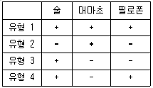
- 3, 4
- 2, 4
- 2, 3
- 1, 4
(정답률: 알수없음)
3과목: 사회통계
61. 다음 중 단일 모분산의 검정에 사용되는 분포는?
- 정규분포
- 이항분포
- 카이제곱 분포
- F - 분포
(정답률: 알수없음)
62. 어떤 동전이 공정한지 알기 위하여 A 씨는 100번 던져서 60번 앞면이 나왔기 때문에 앞면이 나올 확률을 0. 6이라고 추정하였고, B씨는 200번 던져서 90번 앞면이 나왔기 때문에 앞면이 나올 확률을 0. 45라고 추정하였다. 다음 중 이동전의 앞면이 나올 확률의 추정치로 맞는 것은?
- 0.525
- 0.45
- 0.6
- 0.5
(정답률: 알수없음)
63. 세 집단의 평균이 서로 같은지 다른지를 검정하기 위하여 각 집단에서 크기가 6, 7, 11인 표본을 각각 추출하였다. 이 때, 작성되는 분산분석표의 평균오차제곱합(MSE)의 자유도는 얼마인가?
- 23
- 21
- 20
- 19
(정답률: 알수없음)
64. 종업원 수가 1600 명인 회사의 종업원 월 평균용돈을 조사 하였더니, 평균 10, 000 원, 표준편차 5,000 원으로 나왔다. 이 회사의 종업원 가운데 400 명을 임으로 선발하여 표본으로 한다면, 이 표본평균의 표준편차는?
- 125
- 250
- 2500
- 5000
(정답률: 알수없음)
65. 다음은 보험가입자 90 명에 대한 보험가입액을 조사한 자료이다. ( 단위 : 천만 원) 보험 가입액의 모평균이 1억원이라고 볼 수 있는가를 검정하고자 한다. 이에 대한 t-검정통계량이 1.201이고, 유의확율이 0.239이었다. 유의수준 5%에서 올바르게 검정한 결과는?
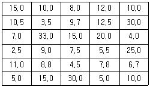
- 유의확률 > 유의수준 이므로 모평균이 1억원이라는 가설을 기각하지 못한다.
- 유의확률 > 유의수준 이므로 모평균이 1억원이라는 가설을 기각한다.
- 검정통계량 1.201 > 유의수준 이므로 모평균이 1억원이라는 가설을 기각하지 못한다.
- 검정통계량 1.201 > 유의수준 이므로 모평균이 1억원이라는 가설을 기각한다.
(정답률: 18%)
66. 다음 이항분표 Bin ( n, p ) 의 정규 근사조건으로 옳은 것은?
- n ≥ 30
- n p ≤ n (1 - p) ≥ 5
- n p ≥ 5, n (1 – p) ≥ 5
- n p ＞ 5
(정답률: 31%)
67. 어느 학급 30 명의 학생 중 가정에 PC 를 보유하고 있는 학생이 20 명, 보유하고 있지 않은 학생이 10명 있는 경우, 전체 학생 중 5 명을 비복원 랜덤추출하여 PC 를 보유하고 있는 학생수를 확률변수 X 라고 정의하면 확률변수 X 의 분포는?
- 이항분포
- 초기하분포
- 포아송분포
- 정규분포
(정답률: 알수없음)
68. 공분산의 설명으로 맞는 것은?
- 공분산은 두 변수의 분산의 곱이다.
- 공분산의 값은 언제나 -1 부터 1 사이에 존재한다.
- 공분산의 값을 x 의 분산과 y 의 분산의 곱으로 나누면 상관계수가 된다.
- 공분산은 x 의 편차와 y 의 편차의 곱의 기댓값이다.
(정답률: 알수없음)
69. 인구수가 생산량에 미치는 영향을 분석하기 위하여 인구수(단위, 100명)를 독립변수, 생산량(단위, 1만원)을 종속변수로 설정하여 회귀분석을 실시하였다. 분석결과 다음과 같은 회귀방정식을 구하였을 때, 회귀방정식에 대한 정확한 설명은?
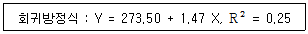
- 인구수가 0 이면, 평균생산량도 0 이다.
- 회귀선은 곡선형이다.
- 인구수가 100 명 증가할 경우에, 평균생산량은 약 1만 4천7백원 증가한다.
- 회귀방정식에 의하여 인구수가 생산량을 설명하는 정도는 75%이다.
(정답률: 50%)
70. 다음 정규분포에 대한 설명 중 맞는 것은 모두 몇 개인가?
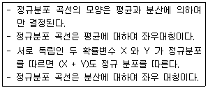
- 1 개
- 2 개
- 3 개
- 4 개
(정답률: 알수없음)
71. 정규분포를 따른 집단의 모평균의 값에 대하여 H0 : μ = 50, H1 : μ＜ 50을 세우고 표본 100 개의 평균을 구한결과
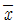
= 49.02를 얻었다. 모집단의 표준편차가 5라면 기각역인 유의확률은 얼마인가 ? ( 단. P ( Z≤-1.96 ) = 0.025, P ( Z≤-1.645 ) = 0.⑤ )- 0.25
- 0.⑤
- 0.95
- 0.975
(정답률: 20%)
72. 행변수가 M 개의 범주를 갖고 열변수가 N 개의 범주를 갖는 분할표에서 행변수와 열변수가 열변수가 서로 독립인지를 검정 하고자 한다. (i, j) 셀의 관측도수를 Oij, 귀무가설 하에서의 기대도수를 Eij라 할 때, 이 검정을 위한 검정통계량은?
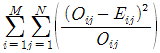
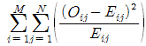
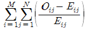
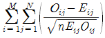
(정답률: 55%)
73. 다음 자료를 가지고 두 변수간의 상관관계를 해석하고자 할 때, 이에 대한 분석으로 올바른 것은?
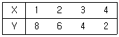
- X 와 Y 는 완전한 음의 상관관계이다.
- X 와 Y 는 완전한 양의 상관관계이다.
- X 와 Y 는 상관관계가 없다.
- X 와 Y 는 부분적 음의 상관관계이다.
(정답률: 37%)
74. 단순선형회귀모형 y=β0+β1X+ε에서 오차항 ε의 분포가 평균이 0이고 분산이 σ2인 정규분포를 따른다고 가정하자. 22개의 자료들로부터 회귀식을 추정하고 나서 잔차제곱합( SSE )를 구하였더니 그 값이 4000이었다. 이때 분산σ2의 불편추정값은 ?
- 100
- 150
- 200
- 250
(정답률: 알수없음)
75. 평균이 μ, 분산이 σ2인 모집단에서 크기 n의 임의표본을 반복추출하는 경우, n이 크면 중심극한정리에 의하여 표본합의 분포는 정규분포로 수렴한다. 이 때 정규분포의 형태는?
- N ( μ ,
 )
) - N ( μ , nσ2 )
- N ( nμ, nσ2 )
- N ( nμ,
 )
)
(정답률: 20%)
76. 정리해 놓은 자료를 설명하는 방법으로 그래프를 사용하면 편리하다. 다음에 설명된 그래프로 알맞은 것은?
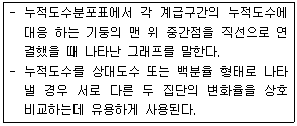
- 히스토그램 (histogram)
- 누적도수다각형(ogive)
- 상대도수다각형 (relative frequency polygon)
- 상자그림표(box - plot)
(정답률: 알수없음)
77. 화장터 건립의 후보지로 거론되는 세 지역의 여론을 비교하여 각 지역에서 500 명, 450 명400 명을 임의추출하여 건립에 대한 찬성여부를 물어 분할표를 작성한 결과 검정통계량의 값이 7.55 라 하면, 유의수준 5 %에서 이 검정의 결과? (단, X~x2(r) 일 때 P [X ＞
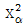
( r ) ] = α 로 표현하면 x0.0252(2) = 7.38, x0.⑤2(2) = 5.99, x0.0252(3) = 9.35, x0.⑤2(3) = 7.81 )- 지역에 따라 건립에 대한 찬성률에 차이가 있다.
- 지역에 따라 건립에 대한 찬성률에 차이가 없다.
- 표본의 크기가 지역에 따라 다르므로 말할 수 없다.
- 비교해야 하는 카이제곱 분포의 값이 주어지지 않아서 말할 수 없다.
(정답률: 19%)
78. 집단 A 에서 크기 nA의 임의표본 [(확률표본) (평균 mA표준편차 SA)]을 추출하고, 집단 B 에서는 크기 nB의 임의표본 [ (확률표본) (평균mB 표준편차 SB ) ] 을 추출하였다. 두 집단의 산포 ( 散布 ) 간 비교에 가장 적절한 통계치는?
- mA - mB
- mA / mB
- SA - SB
- SA / SB
(정답률: 46%)
79. 불량률이 0.1 인 제품을 25 개씩 Box 에 넣어 판매를 한다. 임의의 한 Box 에 있는 불량품의 수를 확률변수 X 로 나타낸다고 하면 X 의 표준편차는?
- 1
- 1. 5
- 2
- 2. 5
(정답률: 알수없음)
80. 상관계수 ( 피어슨 상관계수 ) 설명으로 틀린 것은?
- 선형관계에 대한 설명에 사용된다.
- 상관계수의 부호는 회귀계수의 기울기 ( b ) 와 항상 같다.
- 상관계수는 절대치가 클수록 두 변수의 선형관계가 강하다고 할수 있다.
- 상관계수의 값은 변수의 단위가 달라지면 영향을 받는다.
(정답률: 20%)
81. 평균이 10 이고 분산이 4 인 분포로부터 100 개의 표본을 추출하였을 때, 표본평균을
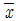
라 하자. P (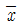
＜ 10.33)를 구하면? ( 단, Z~N ( 0, 1 ) 일 때, P ( Z ＞ 1.96) = 0.025, P ( Z ＞ 1.65 ) = 0.⑤, P ( Z ＞ 8.25 ) = 0, P ( Z ＞ 0.825 ) = 0.2⑤ )- 0.795
- 0.95
- 0.975
- 1
(정답률: 알수없음)
82. 총선을 앞두고 한 지역구의 유권자 400명을 대상으로 조사한 결과 A후보의 지지율 30.5% B후보의 지지율은 34.8%로 나왔다. 자료에 따르면 이번 조사는 95% 신뢰수준에서오차한계가 ±5%라고 하였다. 이 때 결과의 해석으로 옳은 것은?
- 실제 선거에서는 A 후보자는 앞설수도 있다.
- A 후보는 지지율이 낮으므로 포기하는 편이 낫다.
- B 후보가 지지율이 높으므로 당선 가능성이 높다.
- 500명을 대상으로 조사한다면 오차한계는 ±5% 보다 크게 된다.
(정답률: 47%)
83. 정규모집단에서 임의로 15 개의 표본을 추출하여 표본평균 x = 72, 표본표준편차 s = 3.2를 얻었다. H0 : μ = 70, H1 : μ ＞ 70 을 유의수준 α = 0.⑤ 로 검정하고자 할 때 p - 값( 유의확률 ) 의 범위로 맞는 것은? ( 단, df = 14 일 때 : P ( t ＞ 1.761 ) = 0.⑤, P ( t ＞ 2.145 ) = 0.025, P ( t ＞ 2.624 ) = 0.01 이다. )
- p - 값 ＞ 0.25
- 0.⑤＜ p - 값＜ 0.10
- 0.025＜ p - 값＜ 0.⑤
- 0.01＜ p - 값＜ 0.025
(정답률: 알수없음)
84. I (≥ 3 ) 개의 처리를 비교하기 위하여 각 처리가 r 번씩 실험되었다. 처리 평균들을 비교하기 위하여 모든 처리 쌍에 대하여 제1종 개별 오류율 ( individual error rate ) α의 t검증 ( 검정 ) 을 수행하는 경우 제1종 모임 오류율은?
- α보다 작다.
- α와 같다.
- α보다 크다.
- 경우에 따라 다르다.
(정답률: 알수없음)
85. 다음 중 자료의 산포도를 나타내는 측도는?
- 중앙값
- 사분위수
- 백분위수
- 사분위수 범위
(정답률: 34%)
86. 세 가지 서로 다른 포장방법의 선호도가 같은지를 조사하기 위하여 90명으로부터 선호하는 포장형태를 조사한 결과 다음과 같이 얻었다. 선호도가 동일한지를 검정하는 카이제곱 검정통계량의 값은?
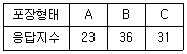
- 2.87
- 2.97
- 3.07
- 4.07
(정답률: 알수없음)
87. 실험계획법의 교호작용 ( interaction effects ) 에 관한 설명으로 옳은 것은?
- 교호작용의 유무는 주효과의 유무와 전혀 관계없이 해석한다.
- 교호작용은 인자수준의 조합에서 생기는 효과를 말한다.
- 반복이 없는 이원배치법에서도 교호작용의 유무를 조사할 수 있다.
- 인자의 수가 많은 다원배치법에서는 고차의 교호작용에 대한 해석을 반드시 해야한다.
(정답률: 28%)
88. 두 개의 사상 A와 B에 대한 확률의 법칙 중 일반적으로 성립하지 않는 것은?
- P(A) = P(A∩B) + P(A∩BC)
- P(A∪B) = P(A) + P(B) - P(A) · P(B/A)
- P(A∪AC) = 1
- P(A∩B) = P(A) P(B)
(정답률: 19%)
89. 다음 확률분포 중 확률변수의 성질상 다른 세 분포와 구별되는 것은?
- 정규분포
- 이항분포
- 포아송분포
- 다항분포
(정답률: 알수없음)
90. 1 부터 8 까지의 숫자가 기록된 카드가 한 장씩 있다. 이 카드를 중에서 한 장을 뽑을 때, 뽑혀지는 카드의 숫자가 5 이상임을 알 때 뽑힌 카드의 숫자가 7 일 확률은?
- 1/2
- 1/3
- 1/4
- 1/5
(정답률: 알수없음)
91. 추정과 검정에 대한 설명으로 틀린 것은?
- 점추정보다 구간추정이 더 많은 정보를 제공한다.
- 유의수준은 귀무가설하에서의 검정력으로 해설될 수있다.
- 유의수준 α 의 검정이란 제1종 오류를 범할 확률이 α 이하인 검정법을 말한다.
- 대립가설의 검정력은 작을수록 좋은 검정법이다.
(정답률: 24%)
92. 교육수준 ( 초졸, 중졸, 고졸, 대학이상 ) 별로 소득의 정도 ( 상, 중, 하 ) 가 다른지 알아보려고 한다. 이때 쓰이는 검정법과 그에 따른 자유도는?
- t - 검정, 3
- t - 검정, 6
- x2 - 검정, 3
- x2 - 검정, 6
(정답률: 알수없음)
93. 다음은 A, B 두 도시에서 각각 100 명씩의 근로자 표본을 추출하여 남녀별로 일당을 구한결과이다. 두 도시 근로자의 평균임금은?
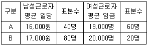
- 26,500 원
- 19,700 원
- 18,300 원
- 17,700 원
(정답률: 알수없음)
94. 중회귀분석에서 비표준화 회귀계수(unstandardized regression coefficient)는 독립변수의 단위에 영향을 받기 때문에 각 독립변수의 상대적 영향력을 비교할 수 없다. 이를 위하여, 단위를 통일시킨 표준화회귀계수를 사용한다. 다음 중, 표준화 회귀계수의 설명으로 틀린 것은 ?
- 표준화 회귀계수는 -1 과 1 사이에 있다.
- 단순회귀분석에서는 표준화회귀계수 두 변수의 적률상관계수가 같다.
- 비표준화회귀계수×(Sx/Sy) 의 식으로 구한다.
- 표준화회귀계수와 비표준화회귀계수의 부호는 항상 같다.
(정답률: 알수없음)
95. 다음 설명 중 틀린 것은 ?
- 표본평균의 분포는 항상 정규분포를 따른다.
- 모집단의 평균이 μ라고 할 때, 표본평균의 기댓값도 μ이다.
- 모집단의 표준편차가 σ 일 때, 크기가 n 인 표본에서 표본평균의 표준편차는 복원추출인 경우
 이다.
이다. - 추정량의 표준편차를 표준오차라 부른다.
(정답률: 19%)
96. 다음 중 측정단위가 서로 다른 두 집단의 산포를 나타내는 측도로가장 적당한 것은?
- 평균절대편차
- 사분위수 범위
- 분산
- 변동계수
(정답률: 알수없음)
97. 점추정치에 관한 설명 중 틀린 것은?
- 표본의 크기가 커질수록, 표본으로부터 구한 추정치가 모수와 다를 확률이 0 에 가깝다는것을 일치성이 있다고 한다.
- 표본에 의한 추정치 중에서 중위수는 평균보다 중앙에 위치하기 때문에 더욱 효율성이 있는 추정치가 될 수 있다.
- 좋은 추정량의 성질 중 하나는 추정량의 기대값이 모수값이 되어야 하는데 이를 불편성이라 한다.
- 좋은 추정량의 성질 중 하나는 추정량의 값이 주어질 때, 조건부분포가 모수에 의존하지 않는다는 것이며 이를 충분성이라 한다.
(정답률: 알수없음)
98. A 도시에서는 실업률이 5. 5%라고 발표하였다. 그러나 관련 민간단체에서는 실업률 5. 5%는 너무 낮게 추정된 값이라고 믿고 이에 대해 확인하고자 한다. 노동력인구 중 520명을 임의 추출하여 39명이 직업이 없음을 알게되었다. 이 문제에 대한 적합한 검정통계량 값은?
- -2.58
- 1.96
- 2.00
- 1.75
(정답률: 알수없음)
99. 확률변수 X가 평균이 20이고 표준편차가 4인 정규분포를 따를 때 X = 14를 표준화시킨 값을 구하여라.
- 1
- -1
- 1.5
- -1.5
(정답률: 알수없음)
100. X, Y의 결합분포함수는f(x, y)=
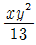
, (x, y) = (1, 1), (1, 2), (2, 2)이고 U, V의 결합분포함수는 g(x, y) =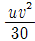
, x = 1, 2, 3. v = 1, 2이다. X, Y 는 서로 독립인가? U, V는 서로 독립인가?- X, Y 는 서로 독립이며 U, V 는 서로 독립이 아니다.
- X, Y 는 서로 독립이며 U, V 도 서로 독립이다.
- X, Y 는 서로 독립이 아니며 U, V 는 서로 독립이다.
- X, Y 는 서로 독립이 아니며 U ,V 도 서로 독립이 아니다.
(정답률: 10%)